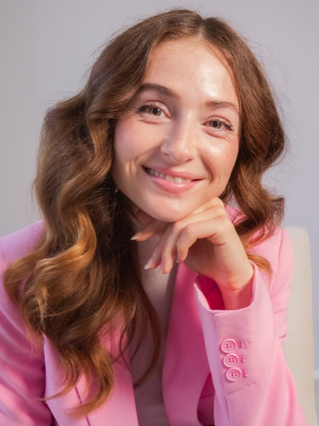

For Microsoft alumni
A 90-minute Activation Session for Microsoft alumni ready for their next iteration: your story, your brand voice, your first real steps.
ActivateYou’ve spent years building someone else’s story, brilliantly. Now something is stirring that’s entirely yours: an idea, a venture, a version of you that doesn’t fit the old title. You can feel it. What you need is someone to see it with you, and give it a shape the world recognizes.


Creative director & brand designer
I’m Natalie. I help founders uncover who they’re becoming and direct the full expression of it: story, identity, aesthetic, presence. I hold the vision and guide every creative decision, so what the world sees is unmistakably you. Clients leave feeling seen, clear, and lit up. This offer comes through my partnership with Karen Fassio for the Microsoft Alumni Network.
Usually $500. Just $300 for the first five alumni who book.
And if we keep working together, your full $300 credits toward any package, so the session pays for itself.
“I’m so happy with this. You understood the essence.”
Come as you are, half-formed idea or blank page. Your next chapter is closer than you think. Let’s activate it, and more.
Activate